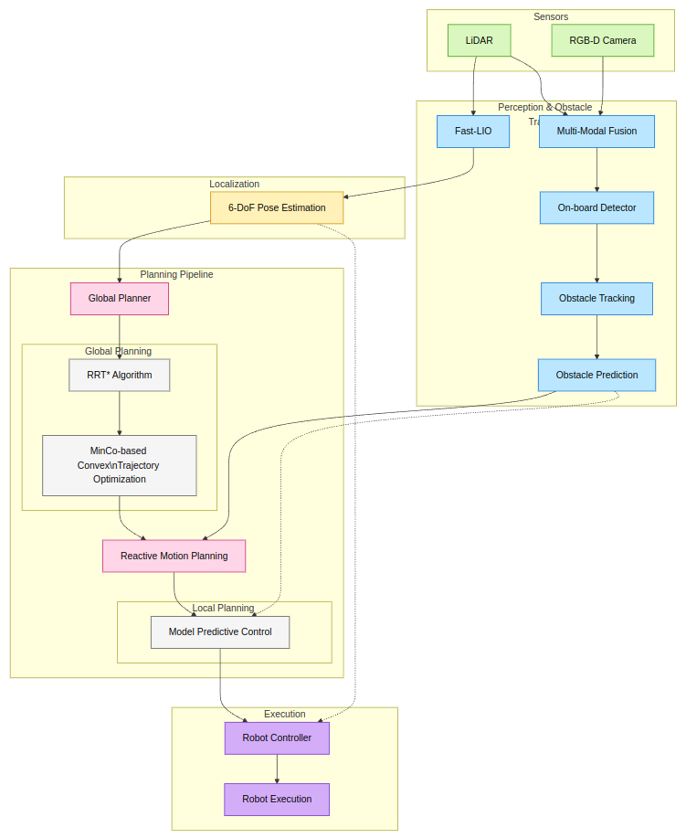
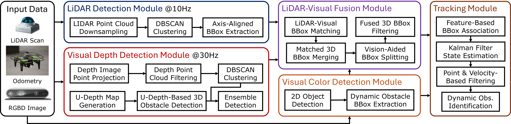
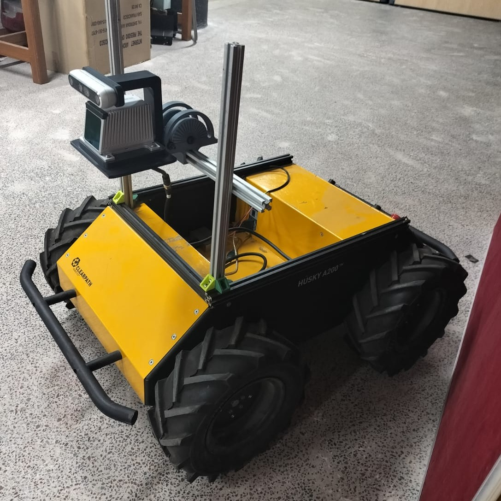
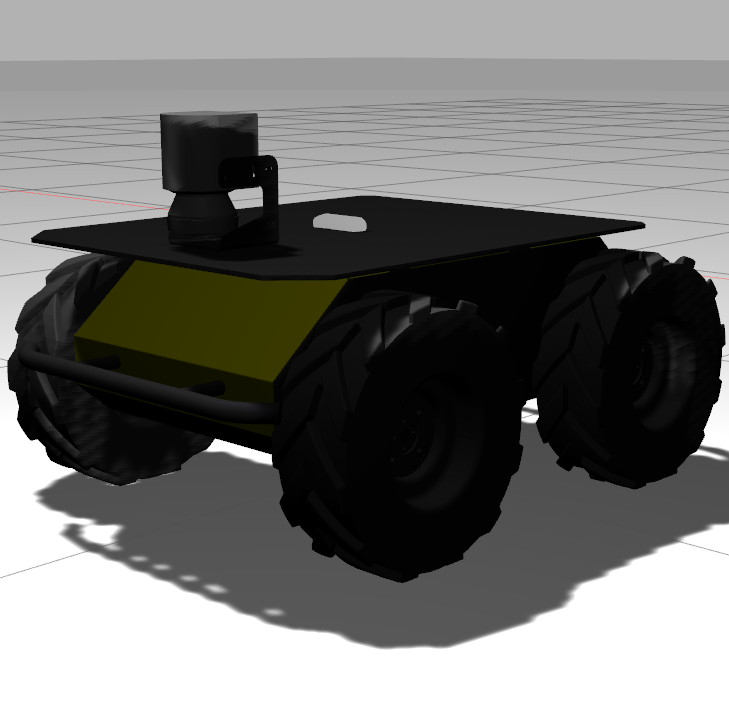

Dynamic Obstacle Detection and Avoidance
Unknown collision avoidance through multi-modal perception and reactive planning
ROS
Husky A200
RGB-D
LiDAR
Fast-LIO
RRT*
MPC
We developed a navigation stack for the Clearpath Husky A200 to detect and track moving obstacles, localize against a LiDAR map, and reactively plan collision-free motion. The system combines RGB-D and LiDAR perception with Fast-LIO localization, RRT*/MinCo global planning, and MPC-based local planning within ROS.
System overview


Dynamic actor detection and tracking
Detecting and tracking a moving actor using the onboard perception stack.
LiDAR localization
The robot localizing with LiDAR against a provided map.
Reactive Planning and Real-world Navigation
RViz visualization
RViz view of localization, obstacle perception, and robot motion. Open in Google Drive ↗
Real-world Husky demo
Real-world robot navigation and reactive obstacle avoidance. Open in Google Drive ↗
Husky platform


Results
- Integrated perception, localization, global planning, and reactive avoidance in ROS.
- Operated the complete planning loop at approximately 0.8 Hz.
- Avoided collisions in 95% of dynamic-obstacle encounters across more than 20 reported trials.